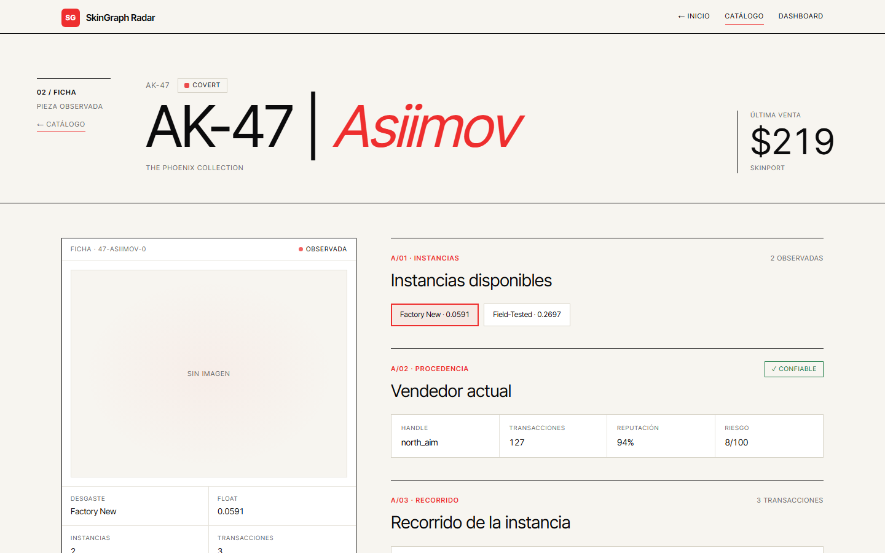

Cero CSS aplicado. La página usa clases de Tailwind (bg-green-500/15, etc.)
que no se generan/aplican en el build de producción. Times New Roman, sin layout, sin grafo visible.
Cada card del catálogo termina acá: es el embudo principal del producto, roto.